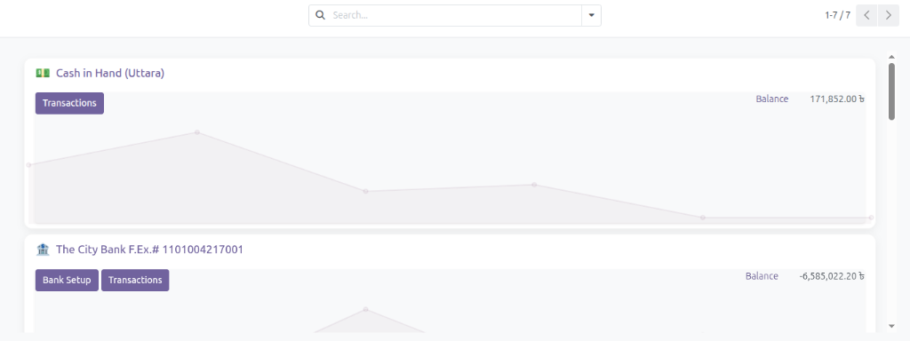
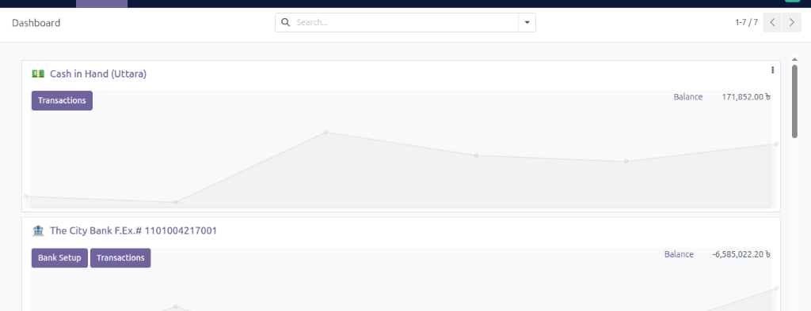

This module completely revamps the standard Odoo Accounting Dashboard. It introduces a highly dynamic, beautifully styled Kanban interface with custom animations, soft shadows, and clean gradients for the best user experience.


Install the module and instantly enjoy a premium Accounting Dashboard!